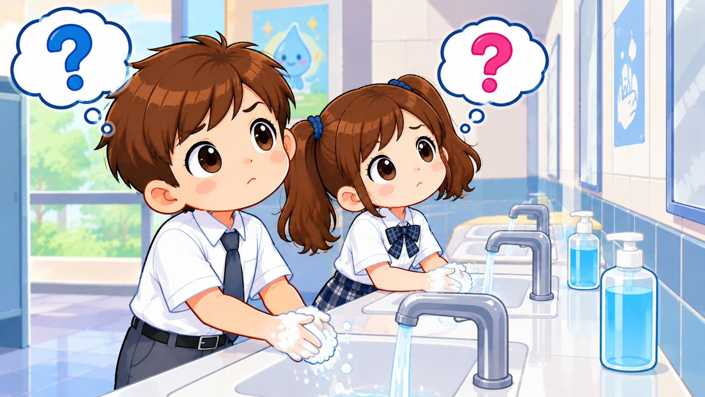

Rakaman suara digunakan untuk aktiviti pembelajaran sahaja. Sila benarkan akses mikrofon atau minta bantuan guru/ibu bapa.
Jom belajar menjaga kebersihan dan kesihatan kantin!
Aplikasi interaktif ini dibina untuk membantu murid Tahun 4 melatih kemahiran lisan dan bertutur bagi topik Kesihatan dan Kebersihan Kantin Sekolah.

Syabas! Kamu telah menyelesaikan semua aktiviti.
Status: 6 daripada 6 Soalan Dijawab